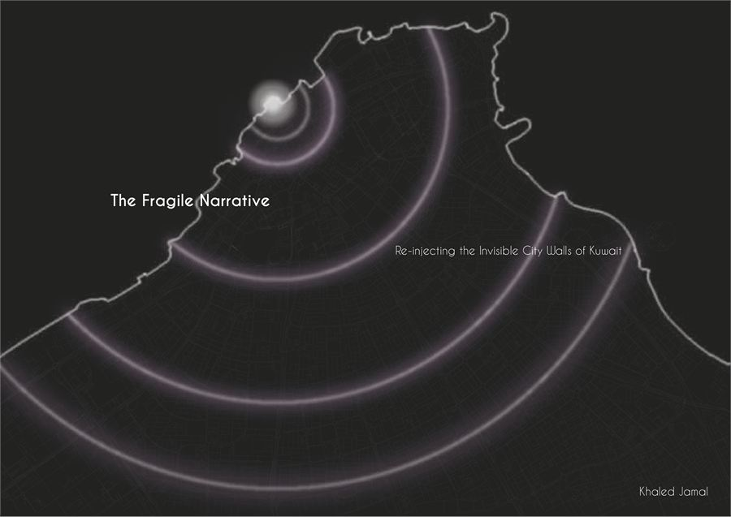

05 — Blog
Writing.
Essays on cities, walls and what happens to heritage when it is inconvenient.

The Fragile Narrative
Re-injecting the invisible city walls of Kuwait. On 4 February 1957 Kuwait decided to dismantle its third wall to make room for the automobile — and with it went a whole spatial narrative. This essay asks what a city can do with a piece of heritage it has already erased.
Published in Kaynuna, the Kuwait Pavilion book, Biennale di Venezia 2025.
More writing to follow.